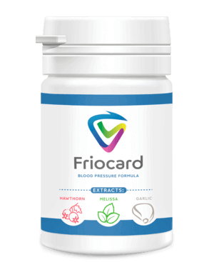

Подуват ли ви се краката вечер? Стъпалата отичат, прасците набъбват, а по глезените остават следи? Това са така наречените съдови отоци, когато замърсените и изтощени кръвоносни съдове пропускат течността чрез стените си в заобикалящите ги тъкани. Отоците придружават мускулните болки и крампи в краката — последиците от недостатъчното кръвоснабдяване.
Всички знаят, че високото кръвно, инсултът и инфарктът са последиците от замърсените с холестерол кръвоносни съдове. Малцина се досещат обаче, че това е само върхът на айсберга. Замърсените кръвоносни съдове причиняват 9 от 10 хронични заболявания, които се смятат за нелечими.
Появяват се главоболие, колебания на кръвното налягане, остра и тъпа болка, щракане в ставите. Не можете да завъртите главата си и гърбът ви е скован. Краката ви отичат вечерно време, а сутрин — лицето. Ушите ви кънтят. Пръстите ви изтръпват, а крайниците замръзват. Зрението и паметта се влошават. Не ви стигат сили за нищо. Мнозина ще кажат, че това е старост. Но това не е така.
На тези въпроси ни отговори професор, практикуващ неврохирург, началник на отделението по хирургия на Клиничния център Петър Филов.
Д-р Филов е направил над 11 000 мозъчни операции. Най-малкият му пациент е бил само на 2 дни.
Д-р Филов е майстор в обясняването на сложни медицински процеси с прости думи. Написал е 47 научно-популярни книги и учебни помагала за хора без медицинско образование. Абсолютно е убеден, че кръвоносните ни съдове са отговорни за 90% от здравето на нашия организъм и че здравословното ни състояние зависи от чистотата им.
Защо кръвоносните съдове осигуряват 90% от здравето?
— Д-р Филов, постоянно твърдите, че съдовете формират 90% от здравето на организма. Защо?
— Кой е най-големият орган в човешкия организъм? Малко хора го знаят. Дори студентите по медицина често грешат. Най-разпространеният отговор е мозък и черен дроб. По-образованите казват, че това е кожата. Но в действителност най-големият орган е нашата кръвоносна система.
2,5 пъти
С кръвоносните съдове на 1 човек Земята може да се опаше
С кръвоносните съдове на 1 човек Земята може да се опаше
За пояснение — Земният екватор е дълъг 40 000 километра. Тоест с нишката от кръвоносните съдове на само един човек може да опашем цялата планета 2,5 пъти.
Какво ще кажете за такъв мащаб?
Съдовете не са само тръбички, по които тече кръвта. Това е сложен и цялостен орган, а нарушенията в работата му веднага се превръщат в заболяване.
Лоши съдове на краката – варикоза, постоянни отоци и нескончаема тежест в краката, измръзване или, напротив, нетърпимо парене в стъпалата. Петите се напукват. При лошо кръвообращение няма защита срещу микроорганизми, което води до гъбична инфекция. Ноктите загрубяват и врастват в меките тъкани.
Запушване на кръвоносните съдове, захранващи черния дроб – хепатоза. Горчив вкус в устата. Ако изядеш нещо мазно, получаваш горчиво оригване.
Изтощени и замърсени съдове в ставите – хрущялите изсъхват. Ставите щракат и болят, появяват се остеохондроза и хернии.
При загуба на тонус от кръвоносните съдове на правото черво – излизат моравите бучки на хемороидите.
Очни съдове - зрението се влошава, пулсации в очите,
помътняване. Развива се катаракта. Зачервяването на очите, което често приписваме на умора, всъщност е
микрокръвоизлив - разкъсвания на най-малките очни капиляри.
Проблеми с очните съдове - зрението се влошава, започвате да виждате петна и «мушици» пред очите. Развива се катаракта. Често обясняваме зачервяването на очите с умората, но в действителност микрокръвоизливите са разкъсвания на най-фините очни капиляри.
При затруднено мозъчно кръвообращение - получавате виене на свят, шум в ушите и разсеяност. Случвало ви се е да отидете в кухнята, а когато сте там, вече не помните защо. Или добре позната дума да ви се върти на езика, но не можете да си я спомните. Всичко това са признаци за влошаването на състоянието на мозъчните съдове.
Кръвоносните съдове са нашата хранителна система, в съдовете тече самият живот. Блокираш ли важния участък на магистралата, животът спира.
Замърсените съдове са гладна смърт за всички органи.
Наднорменото тегло, между другото, е тясно свързано с кръвоносните съдове. Запушените с холестерола съдове обричат органите на глад, тъй като съдовете не могат да доставят до тях необходимото количество хранителни вещества. Затова мозъкът изпраща сигналите: «трябва да се яде». И човекът яде. Органите обаче така и не получават достатъчно храна заради замърсените съдове. Мозъкът пак командва: «трябва да ядеш». И става един омагьосан кръг.
Оттук произтича постоянното желание да се хапне нещо, желание за сладка и мазна храна — организмът изисква калориите.
Когато моите колеги казват на пациентите си: «Имате хипертония, защото сте с наднормено тегло», те бъркат причината и следствието. Имате хипертония не защото сте с наднормено тегло. А теглото ви е наднормено, защото имате хипертония.
Затова няма да се уморя да повтарям: ако искате да живеете пълноценен живот, прочистете и възстановете кръвоносните си съдове. Чистите съдове са ключът към излекуването на 90% от хроничните заболявания, някои от които се смятат за «нелечими».
С какво още, освен холестерола, се замърсяват съдовете?
Всички знаят, че холестеролът е вреден. Именно той запушва кръвоносните ни съдове, стеснява лумена им и нарушава кръвообращението. Но дали той е единственият виновник?
6,1 кг
е общата маса на замърсяванията, които се натрупват в съдовете към 50-годишна възраст.
е общата маса на замърсяванията, които се натрупват в съдовете към 50-годишна възраст.
Холестерол
— Да, прав сте. Холестеролните плаки, наричани още «атеросклеротични плаки», формират около 65-70% от замърсяванията на кръвоносните съдове.
Към 50-годишна възраст в човешките кръвоносни съдове се натрупват до 5 кг холестеролни плаки. Холестеролните натрупвания стесняват лумена на кръвоносните съдове 4-5 пъти.
Холестеролните плаки сами по себе си не са животозастрашаващи. Да, качеството на живот намалява, повишава се кръвното налягане, появяват се главоболие и болки в ставите, слабост и апатия. Значително по-опасни са тромбовете, които също се натрупват в кръвоносните ни съдове.
Кръвни съсиреци
Тромбовете се натрупват в доста по-малки количества, «само» около 800 г – 1 кг. Но те са опасни с това, че са нестабилни. Всеки момент тромбът (кръвният съсирек) може да се откъсне и да тръгне по кръвоносните ви съдове, търсейки жертва.
Ако тромбът е достатъчно голям, той плътно «запечатва» кръвоносния съд-жертвата. Получава се исхемия — пълно спиране на кръвоснабдяването на органа, който се захранва чрез този кръвоносен съд.
Исхемичен инсулт е запушване на мозъчен кръвоносен съд. Инфаркт е запушване на сърдечната артерия. Исхемия на черния дроб, колапс на белия дроб, бъбречна недостатъчност... Хемороидите не са нищо друго освен исхемия на кръвоносните съдове на правото черво. Запушването дори на малки съдове на краката, с течение на времето води до некроза — гангрена.
Калциева вар
Калциевата вар в кръвоносните съдове е остатъци от химически медикаменти и хранителни добавки. Към 50-годишна възраст се натрупва около 300-400 г от нея. Най-много вар се отлага по мозъчните съдове.
Калциевата вар е опасна поради острата си, кристална структура. При рязко свиване — спазъм на кръвоносния съд, предизвикан от стрес, физическо натоварване или времето, острият кристал на варта може да пробие кръвоносния съд и да причини разкъсването му. А разкъсването на мозъчен кръвоносен съд е хеморагичен инсулт.
4 явни признака за лоши съдове и още 7 скрити
— Какви симптоми показват, че кръвоносните ни съдове са запушени със замърсявания? Как да разберем, че организмът ни крещи: «Почисти кръвоносните ми съдове веднага!»?
— Честно казано, ако сте над 45 години и нито веднъж не сте приемали нутрицевтици за прочистване на кръвоносните съдове, гарантирам ви, че вече имате големи проблеми с тях.
45 години
е границата, след която прочистването на кръвоносните съдове е задължително
е границата, след която прочистването на кръвоносните съдове е задължително
Замърсяването на съдовете с холестерол, тромбове, калцификацията им — това е всъщност естествен процес на стареене. Разбира се, съвременната храна, медикаментите, пушенето и алкохолът ускоряват процеса на замърсяването 5-8 пъти. Но всички сме хора и живеем в такъв свят, няма как да го избегнем.
Главният признак за замърсени кръвоносни съдове
Ако имате диагноза «хипертония», може да не четете по-нататък. Хипертонията е кралицата на болните кръвоносни съдове.
Страдате от колебания в кръвното налягане? То е постоянно повишено и ви се налага непрекъснато да пиете лекарства? Това означава, че луменът на кръвоносните ви съдове в най-добрия случай вече е 30% от нормалния. Останалото е плътно покрито с холестеролни плаки, кръвни съсиреци — тромбове и калциева вар.
Ето защо най-малкия стрес, промяна във времето или магнитна буря незабавно се отразяват върху здравословното ви състояние. Кръвното налягане се повишава, по главата ви сякаш удря чук, въртят ви ставите.
Четирите заболявания, причинени от болни кръвоносни съдове:
7 симптома, намекващи за проблема:
Имате ли поне един от тези признаци? В такъв случай кръвоносните ви съдове отчаяно бият тревога, изисквайки почистване и подхранване.
Болните се опитват да лекуват всяко заболяване поотделно. Хапчета за високо кръвно, мехлеми за разширени вени, свещи за хемороиди, гелове за остеохондроза. Да не забравяме и болкоуспокояващи, болкоуспокояващи, болкоуспокояващи...
Те просто хвърлят на вятъра сума ти пари по аптеките. А работата е там, че причината за всички заболявания е една и съща — обструкция на кръвоносните съдове. И трябва да се започне именно с генералното почистване на кръвоносните съдове.
С какво да прочистим съдовете си от холестерол, тромбове и калциева вар?
Дайте ни конкретен медицински съвет. Да вземем някоя жена, да речем, Стоянка Петрова. Тя е на 57 години, омъжена е, има наднормено тегло, хипертония и разширени вени. Реагира на времето като прецизен барометър — болят я ставите, чувства се отпаднала и сънлива, цепи я главата.
Как да помогнем на Стоянка Петрова? С какво тя може да прочисти кръвоносните си съдове, без да се моли на лекарите и без да слуша нравоучения от рода на: «Трябва да отслабнете», «Трябва да спортувате», «Вашето заболяване се дължи на възрастта ви» и така нататък?
- Да, за съжаление, медицината у нас, особено в провинцията, е под всякаква критика. Затова напълно разбирам нежеланието за консултации с лекари. Но Стоянка Петрова ще се справи добре и сама.
За безопасно прочистване на кръвоносните съдове мога да посоча само едно средство с безупречна репутация – . удължава живота с 11-17 години, като го изпълва с енергия и лекота, а не с цената на мъчения и загуба на последните жизнени сили.
Той е безопасен, а по ефективността си е на второ място след хирургичното отпушване на кръвоносните съдове — стентиране. За разлика от хирургическата намеса, той няма усложнения и странични ефекти. Курсът с препарата прочиства всички съдове в организма: от големите дебели артерии до най-малките фини капиляри.
е сублимирана смес от растителни екстракти, която при контакт с вода активира живите молекули. Тези акуратни чистачи измитат от кръвоносните съдове холестеролната слуз, полепналите по стените кръвни съсиреци — тромбове, калциевите налепи — остатъци от медикаменти. Всичко, което пречи на нормалното преминаване на кръвта.
Мръсотията, която се е натрупвала с години, тровейки живота ви, се отстранява с помощта на за 1,5-2 месеца редовен прием.
Заедно с тях изчезват главоболието и шумът в ушите. Получавайки пълноценното хранене чрез чисти кръвоносни съдове, мозъкът работи със скоростта на суперкомпютър. Мислите ви стават ясни и отчетливи.
Чувствата ви се изострят, чувате приятни звуци, които не сте забелязвали преди. Слухът ви се подобрява, можете да чуете дори тих разговор в съседната стая.
Миризмите се изпълват с нови нюанси. Вече нямате запушен нос, хронична хрема и алергия. Бронхите се отварят. Дишането става равномерно и свободно. Свежият въздух, изпълвайки белия дроб, се разпространява по цялото тяло на приятни вълни и създава усещането за лека еуфория.
Вкусовете стават ярки и наситени. Обичайната храна доставя необикновено удоволствие. Ядете по-малко, но се засищате повече. Изчезва постоянното желание за сладки и мазни храни.
Ставите са ви благодарни, тъй като вече не изпитват болка. Напълно изчезва щракането, което се сменя с плавността на движенията, която се дължи на обновяването на ставната смазка. Сякаш в двигателя наляха ново масло и смениха черната, мръсна, с метални стружки мътилка с прясното, бистро масло, осигуряващо перфектно плъзгане.
— Впечатляващо е. Честно казано, за първи път чувам за . Чувал съм за нутрицевтиците в общи линии. В Япония и Израел нутрицевтиците със закон са получили статут на предпочитан метод за лечение. А в България към тези препарати все още се отнасят с недоверие.
— Нашата Стоянка Петрова със сигурност е изпробвала стотици различни добавки и хапчета, отказала се е да продължава да се бори и се е зарекла да не харчи повече пари за съмнителните чудодейни средства.
- Нека ви разкажа една поучителна история за недоверието.
Както навремето пеницилинът е победил преобладаващите тогава заболявания: дизентерия, тиф, белодробна чума, така и постепенно ще заличи заболяванията на кръвоносните съдове. Първите стъпки вече са направени — Япония, Канада, Корея, Швейцария и Израел на законодателно ниво са утвърдили предимството на прочистването на кръвоносните съдове с нутрицевтиците пред медикаментозната терапия.
В България официално се назначава само в едно място – в престижна частна клиника. Там, където се лекува нашият елит — министри, депутати, известни личности и други от хайлайфа. Затова тези пациенти получават резултат, а не безкраен процес.
На всички останали Министерството на здравеопазването препоръчва да се лекуват с химия, която произвеждат заводите, принадлежащи на същия този елит.
— Аз също мисля, че съмненията са най-лошият ни враг, така че не се страхувам да пробвам нови неща.
— Нека си представим, че съм си купил Отварям опаковката, взимам капсулата и я пия с чаша вода... Какво се случва след това? Как действа ?
— След това започва да работи истинска природна лаборатория. Обикновен глог (Сrataegus monogyna) — подобрява сърдечната дейност, намалява кръвното налягане при хипертония, разширява кръвоносните съдове при спазми, успокоява нервната система, намалява тревожността, облекчава главоболие, спазми и замаяност.
Сух екстракт от чесън — понижава кръвното налягане.
Капсулите са малки кислородни бомбички. Те взривяват холестеролните натрупвания в кръвоносните ви съдове и отварят пътя за свободното преминаване на кръвта.
удря два заека наведнъж — премахва холестеролните замърсявания от кръвоносните съдове и стимулира правилното изгаряне на мазнини. Благодарение на това усещате мощен прилив на енергия, искате да се движите, очите ви светят, появява ви се желание да «премествате планини».
Все едно ви махат камък от сърцето и то се отпуска. Ритъмът на сърцето става бавен и равномерен. Повече не ви безпокоят нито аритмия, нито тахикардия. Резките бодежи в гърдите, причинени от натоварванията на сърцето, вече не се повтарят, ще забравите за тях завинаги.
Рискът от инфаркт спада значително.
Успокоява нервната система
Витамин D3 е вещество, без което нервната система не може да функционира, има успокояващ ефект. Подобрява кръвообращението и участва в образуването на кръвта.
Ефектът на пеперудата
е подобен на размахването на крилата на пеперудата, което предизвиква верижна реакция от чудесни промени. Започвайки от изчистването на натрупаната от десетилетия мръсотия от кръвоносните съдове, стъпка по стъпка задейства верижната реакция за възстановяване на организма.
Лесно събуждане
Събуждате се сутрин и лесно ставате от леглото — няма нужда да се карате насила да станете, да раздвижвате и разтривате скованите си крака, скърцайки с гърба и врата си.
Още от сутринта тялото ви е изпълнено с енергия и сила, защото кръвоносните съдове са напълно изчистени и през нощта всички органи са получили достатъчно храна и почивка. Нито една част от тялото ви не е гладувала от недостатъчното кръвоснабдяване, събирайки силите за новия ден.
Вкусна закуска
На закуска изяждате сандвич с дебел слой краве масло и сочен хрупкав бекон, а стомахът и черният ви дроб го поемат с лекота. Нямате горчиво оригване или бодежи и режещи болки в стомаха. е прочистил кръвоносните ви съдове, захранващи стомаха, и сега той е способен да смели дори и пирон.
Юнашка сила
Излизайки навън, вече не е нужно да се притеснявате за краката си — не възприемате ходенето пеша като натоварване, можете да ходите дори цял ден, а краката ви не се уморяват и не се подуват. Сандалите, обувките и чорапите не оставят следи по подутите ви крака като въжета в колбас.
Абсолютно спокойствие
Вие сте абсолютно спокойни и отпуснати. Вече нямате постоянна болка, поглъщаща съзнанието ви, която не ви позволява да се съсредоточите върху нищо друго. Когато нищо не ви боли, обичайните неща, звуците, миризмите блестят с нови, отдавна забравени нотки.
Завидна ведрина
Дори след тежък работен ден се прибирате вкъщи с ясна и свежа глава. Мозъкът ви работи като швейцарски часовник, изобщо не чувствате умора.
Приятен сън
И така, вече сте в леглото и заспивате бързо и лесно. В миналото са времената, когато се въртяхте в леглото половината нощ, от време на време обръщайки възглавницата, и все не успявахте да заспите. Сега всичко е просто: вие командвате, кога да заспите, а организмът ви послушно изпълнява вашата команда.
Дефицит и регионална програма за подпомагане
– За съжаление, да. От началото на тази година повече не се предлага в аптеките.


Причината за конфликта беше алчността на аптечните вериги, които поискаха от производителя на да им плаща отгоре над обявената сума! Освен че слагат огромни надценки върху цените на производителя (цената на курс в някои аптеки в София достигаше огромни суми), аптекарите поискаха допълнително да таксуват производителя.
Представителите на аптеките се оправдават с това, че такава надценка им позволява да оцеляват. Защото е препарат, който купуват 1 път на 7‑10 години. Освен това, след прочистването на кръвоносните съдове с хората вече не се нуждаят от препаратите, които приемаха постоянно! Хората се отказват от препарати за понижаване на кръвното налягане, престават да купуват средства за болки в ставите. Значително намаляват употребата на лекарства за астма и диабет. А всичко това означава загуби за аптеките. Затова те изискват цената на да бъде максимално висока.
В резултат на това производителят на развали договорите с всички аптеки и започна да го разпространява само чрез интернет. По принцип това е правилно. Преценете сами: не трябва да плащате наеми за търговски площи, както и подкупи на аптеките, за да влезете в тях. Ето защо сега е много по-достъпен, отколкото когато се продаваше в аптеките.
Регионална програма за подпомагане «Чисти кръвоносни съдове»
Нашият институт съвместно с Националния медицински изследователски център по сърдечно-съдова хирургия, пощата и производителя на , в рамките на проекта «Телемедицина» (интернет медицина), стартираха регионалната програма за подпомагане.
— Какво трябва да се направи за участие в програмата?
— За да поръчате в рамките на регионалната програма за подпомагане (РПП), трябва да отговаряте на следните условия:
- Колко време ще действа програмата за подпомагане?
КОМЕНТАРИ:
Цветан
Купих 2-месечен курс за почти 980 лева. Миналата година, когато се предлагаше в аптеките. И честно казано, не съжалявам! Въпреки че се оказа скъпо, вече само за последната година спестих почти същите пари от други лекарства. И колко по-лесен стана животът ми, така че не може да се сравни с никакви пари! На 48 години се чувствах като немощен старец. Опитвах се да стоя близо до тонометъра и хапчета за високо кръвно, дори не мечтаех да стигна до пенсия, главата ме цепеше през цялото време, дори постоянно ми се въртеше една мисъл - по-скоро да си отида... Забравих за кръвното налягане след 2 месеца, чувствам се като здрав млад МЪЖ (ако разбирате какво имам предвид)!!! Така че дори и ако в регионът ви няма преференциална цена, тогава поръчвайте без отстъпки, за каквито и да е пари - няма да съжалявате! Чувствам, че скоро ще забранят в България, на толкова много компании той разваля живота и ги лишава от печалби.
Искра
Е НАЙ-ДОБРИЯТ ПРЕПАРАТ ОТ ВСИЧКИ. Първо приемах аделфан, после нитролонг. Знам, това са остарели лекарства. Но не обичам да ходя по лекари, пък и не се притеснявах много. Прибягвах до тях понякога – когато имах високо кръвно или ме болеше сърцето. Но после изведнъж те престанаха да ми действат. Тогава отидох на лекар, и той ме посъветва да опитам новия препарат (докторът беше младо момче, сигурно още вярва, че медицината трябва да бъде за хората, а не за източване на пари!). ми помогна още с първия прием – веднага си свалих кръвното, но реших да изкарам целия курс, както ме посъветва лекарят. След 3 седмици напълно забравих, какво е хипертонията. Нямам повече разширени вени, от които страдах 10 години! Имах и женски проблем, и той също отмина без следа. Чувствам се перфектно, като на младини!
Николина
Благодаря! Успях да си поръчам цял курс на промоция. Ще пробвам.
Христина
На майка ми започнаха да ѝ изтръпват пръстите на ръцете, една позната лекарка я посъветва да си прочисти кръвоносните съдове. Назначи ѝ статините, но аз прочетох, че те могат да предизвикат рак на правото черво. После случайно научихме за . Купихме едва ли не скришом. Не след дълго вече имаше резултат – само след няколко дни се забеляза подобрение на цвета на лицето, състоянието на косата, ноктите и общото състояние на организма, а към втората седмица пръстите почти престанаха да изтръпват. За месец и половина изтръпването напълно премина + кръвното се нормализира. Разликата в здравословното състояние на майка ми е от земята до небето - тя стана много жизнена, паметта ѝ се подобри и ставите ѝ престанаха да я болят дори и при промяна на времето. Като цяло средството е супер, препоръчвам го на всички!
Цветанка
Купих за високо кръвно. Почти всяка вечер имах главоболие, направо умирах от болка, дори обезболяващите не помагаха. После разбрах, че главата ме боли от кръвното. Както и да е. Моя съученичка ми препоръча , аз успях да си поръчам една опаковка на промоция, бях много доволна. За 2 месеца се превърнах в друг човек! Разбрах, че преди да почистя кръвоносните си съдове, всъщност не съм живяла! Главата вече не ме боли, нямам разширени вени! Ето това означава възстановяване на кръвообращението! Определено препоръчвам на всички!
Гергана
Благодаря за коментара ви! Много мразя да ходя по поликлиники, още повече, че обикновено лекарите изписват или скъпи, или много редки лекарства (спомням си, как веднъж не можах да намеря едни капки за очи в нито една от аптеките в нашия град). Та и не винаги лекарите виждат проблемите на нашия организъм в дълбочина. Вече от една година ръцете ми периодично изтръпват сутрин. Благодарение на вас ще опитам този . Дори и ръцете ми да изтръпват по друга причина, прочистването на кръвоносните съдове няма да навреди! Както и прием на натурален продукт. Благодаря!
Русана
Чувала съм за този начин на прочистване на съдовете, но засега не съм го опитвала... Мисля, че сега е време да го пробвам, докато е на промоция :)
Емилия
Рискувах и засега не съжалявам. Препоръчвам го при проблеми с кръвоносните съдове. Нямаше странични ефекти, останах много доволна от резултата.
Заряна
Имам висок холестерол, назначиха ми ПРАВАСТАТИН. Дори и една седмица не издържах да го пия - подуха ми се всички лимфни възли, особено шийните, не можех да завъртам главата. А и зрението ми се влоши. Точно след 4 дни прием получих някаква мъгла пред очите. Лекарят ми каза, че статините понякога го причиняват, и че го има сред страничните ефекти. Изписа ми друго лекарство - КРЕСТОР, но аз се уплаших и реших да не го пия. Сега си мисля да опитам , нали натуралния състав не трябва да предизвиква странични ефекти?
Боян
е най-доброто нещо при холестерол! Нямах никакви странични ефекти от него - няма и от какво да се получат, всичко е натурално. Е, освен ако нямате някаква рядка алергия.
Борислав
Най-доброто средство при холестерола е ДИЕТА!
Юлия
Диетата ще помогне да се предпазите от новите натрупвания, но няма как да повлияе върху старите. Повярвайте ми, неведнъж съм изминала този път с диетите.
Пенка
Общият холестерол беше 6,8, което е прекалено много за мен. Постоянно виене на свят, скокове в кръвното налягане и лошо общо състояние. А след 2 месеца този показател беше 3,4. Но най-важното е, как се чувствам сега! Та, може вече и да не си правя изследвания. Разбрах, каква е разликата, какво е «обезмаслена» кръв, когато главата работи ясно :-) Хората, когато ме видят, казват, че дори говоря по-добре! Всичко се промени.
Сияна
Благодаря за информацията! Искам да го пробвам, кръвното ми налягане ме съсипва...